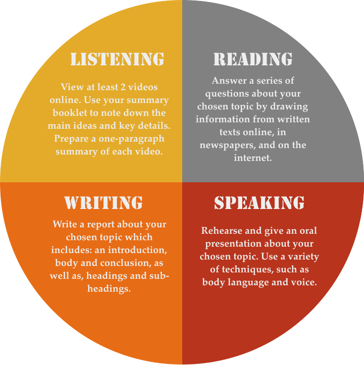

What you'll do...
The projects on this website will help you learn some vital skills and build your English language knowledge in a fun and challenging way. Importantly, you will learn to be a self-directed learner, which will help you be successful in High School and beyond. Here you'll find a number of projects to inspire you.
Meet your progress goals sooner when you:
Choose 1 of the projects listed or develop your own.
It should take you about 2 weeks to complete one project.
Complete at least 3 projects during her course.
There are 4 main components that you will be assessed on: 